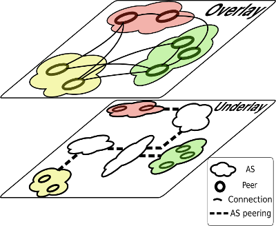

In this project we target the problem of characterizing and assessing the
global impact of the load imposed by a Peer-to-Peer (P2P) overlay
on the AS-level underlay. Toward this end, we use best practices in the
research community to capture snapshots of both overlay and underlay.
We use fast crawling techniques to capture the P2P overlay topology and
obtain the annotated AS-level topology of the Internet from CAIDA.
Using BGP simulation over the AS-level topology, we infer all AS-level
paths between edge ASes (those hosting P2P clients). Next, using a
simple overlay traffic model, we associate traffic to each overlay
connection and using the inferred AS-level paths, we map the overlay
traffic to the underlay.
Some questions that we try to answer in this project are the following:
- What is the distribution of load among the ASes?
- Which ASes carry the highest load?
- Is the underlay load pattern mostly a factor of the
underlay structure or the overlay structure and load patterns?
- To what extent does the load diffuse to the core of
the Internet?
- How has the load pattern changed over the past years?
|
Characterizing the Global Impact of P2P Overlays on the AS-Level Underlay
|
|
PDF |
|
Amir H. Rasti, Reza Rejaie, Walter Willinger
Accepted to
Passive & Active Measurement Conference,
Zurich, Switzerland, April 2010
|
Understanding the Effect of P2P Overlay On the AS-Level Underlay
|
|
Paper
|
|
|
Poster |
Amir H. Rasti, Reza Rejaie, Walter Willinger
In Proceedings of
ACM International Conference on emerging Networking
EXperiments and Technologies (ACM CoNEXT), Student Workshop, Columbia University, New York, NY, December 2007
Acknowledgment and Disclaimer
This material is based upon work supported
in part by the National Science Foundation (NSF) under Grant No. Nets-NBD-0627202 and an
unrestricted gift from Cisco Systems. Any opinions, findings, and conclusions or
recommendations expressed in this material are those of the authors and do not
necessarily reflect the views of the NSF or Cisco.